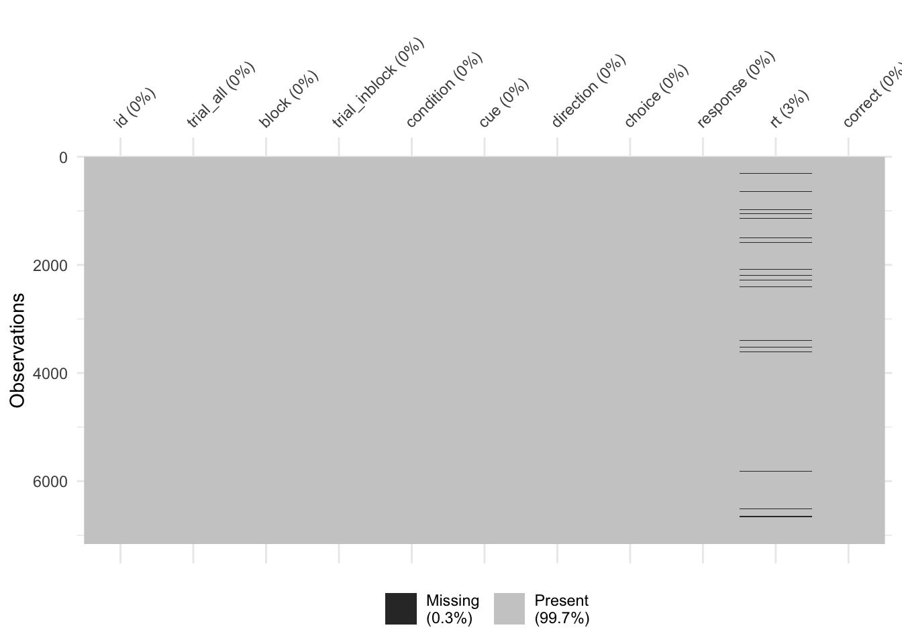
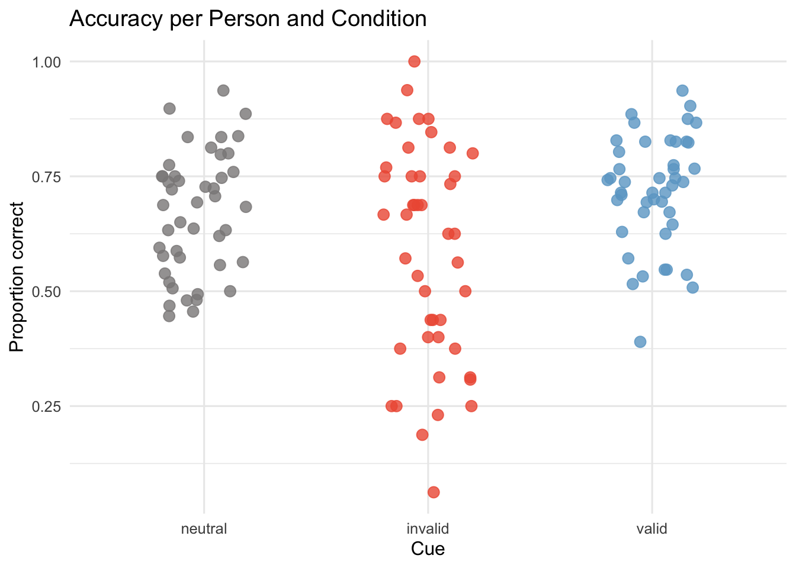
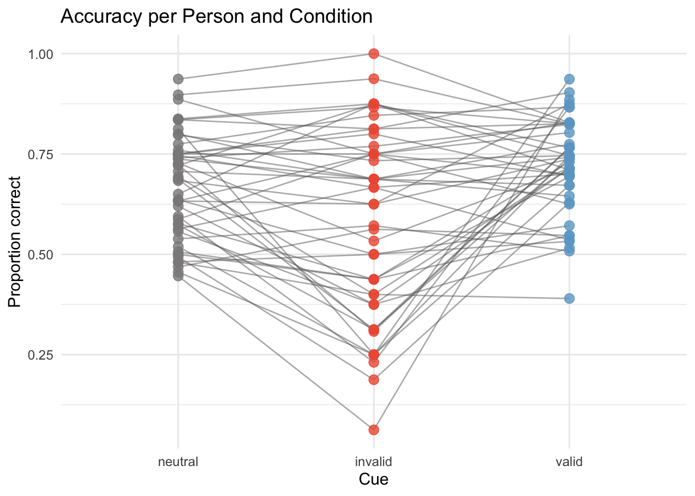
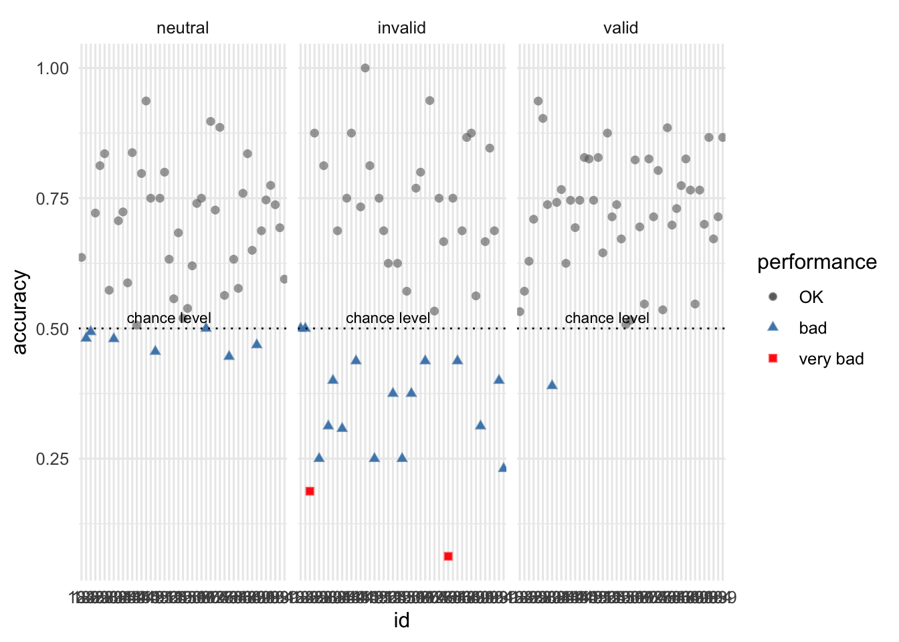
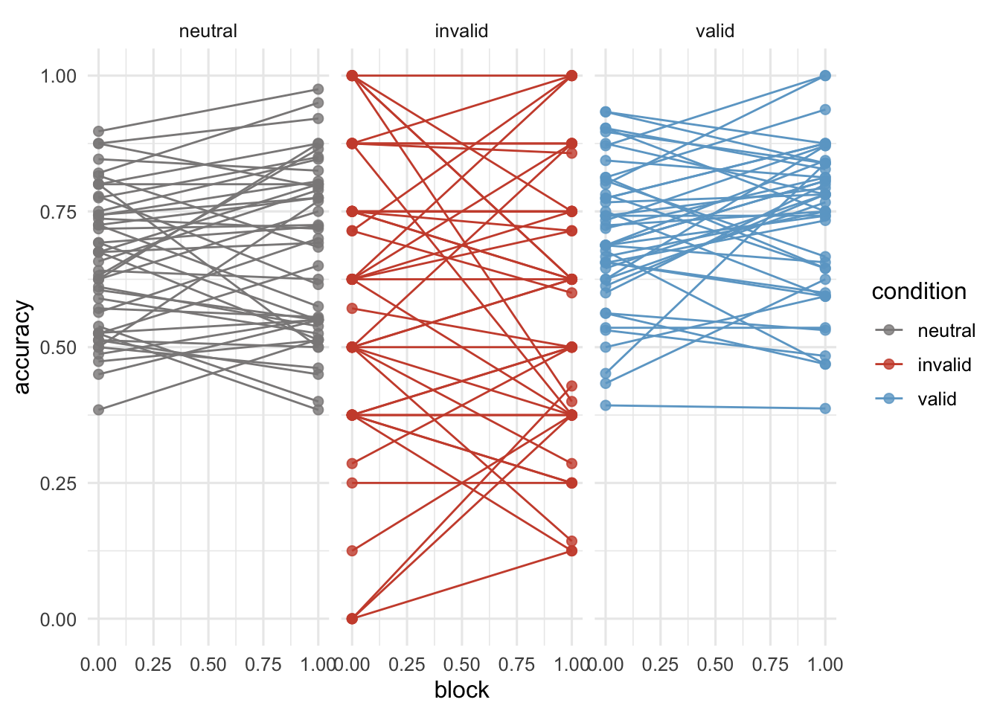
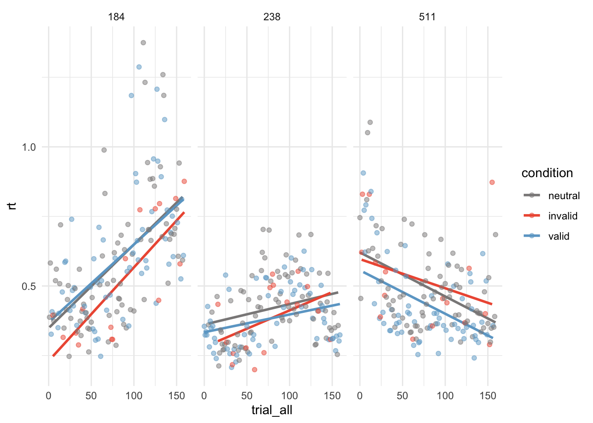
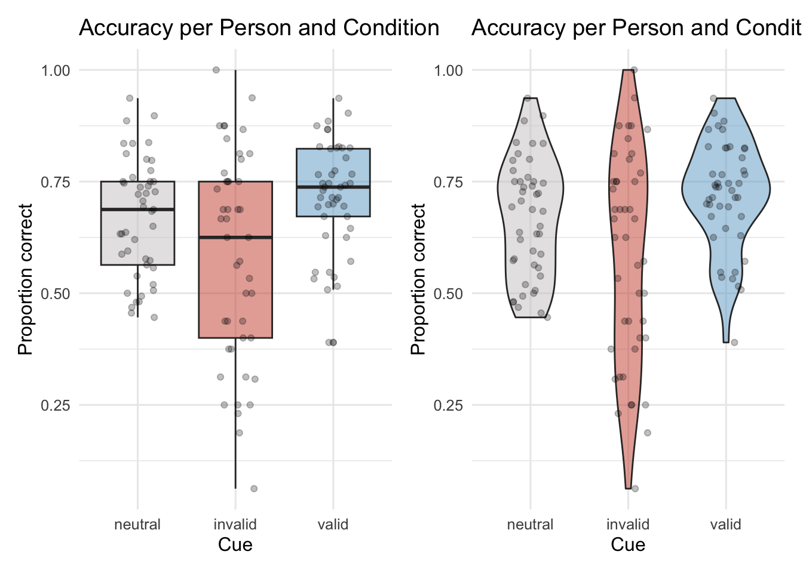
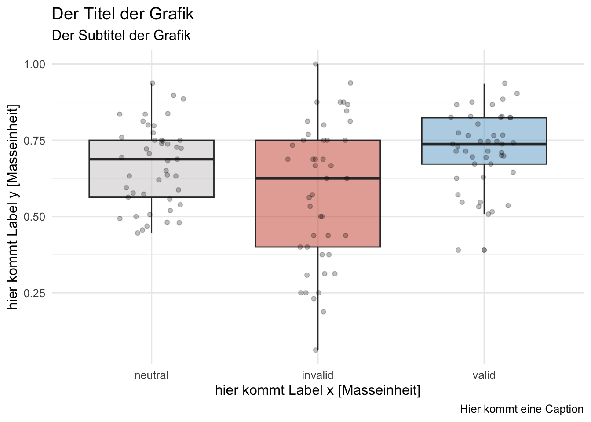

Datenvisualisierung ist ein wichtiger Schritt in der Analyse neurowissenschaftlicher Daten. Das grafische Darstellen von Informationen dient dazu die Datenkomplexität zu reduzieren und wichtige Eigenschaften herauszuheben und zusammenzufassen.
Dabei geht es nicht nur darum Ergebnisse zu kommunizieren, sondern auch dazu Einsichten über die Daten zu gewinnen: Auch wenn in den meisten wissenschaftlichen Artikeln nur wenige Grafiken gezeigt werden, wurden die Daten oft während der Analyse zahlreiche Male visualisiert.
Wir schauen uns drei Kernaufgaben der Datenvisualisierung an:
Diagnostik: Daten untersuchen
Analyse: Daten zusammenfassen
Kommunikation: Forschungsergebnisse visualisieren
Je nachdem welchem Zweck eine Grafik dienen soll, müssen andere Grafikeigenschaften berücksichtigt werden. Diagnostische Grafiken müssen beispielsweise nicht schön aussehen. Eine “gute” Grafik komprimiert die Information in den Daten so, dass Erkenntnisse gewonnen werden können.
Hands-on
Wir arbeiten mit einem R-Markdown-File. So können wir Code und normalen Text verbinden, auch die Outputs des Codes (unsere Grafiken) werden anzeigt. Auf diese Weise erstellen wir reproduzierbare Grafiken.
Öffnen Sie das RStudio-Project dataviz. Falls Sie diesen noch nicht heruntergeladen haben, laden Sie hier den Projektordner herunter und entzippen Sie diesen.
Laden Sie hier den Datensatz unseres Experiments herunter und speichern Sie den Datensatz im Ordner mit dem RStudio-Projekt dataviz im Ordner data_rdk heisst.
Öffnen Sie das RStudio-Projekt dataviz.
Öffnen Sie unter File > New File > R Markdown ... ein neues RMarkdown-File. Geben Sie einen Titel und Ihren Namen ein und wählen Sie HTMLals Output-Format. Speichern Sie dass Dokument unter dem Namen data_visualization_2ab.
Zuerst laden wir das tidyverse Package, lesen das gespeicherte .csv File ein und machen aus allen Variablen mit Text Faktoren.
# A tibble: 10 × 11
id trial_all block trial_inblock condition cue direction choice response
<fct> <dbl> <dbl> <dbl> <fct> <fct> <fct> <fct> <dbl>
1 511 0 0 0 neutral none right right 1
2 511 1 0 1 neutral none left left 0
3 511 2 0 2 invalid right left left 0
4 511 3 0 3 invalid left right right 1
5 511 4 0 4 valid right right right 1
6 511 5 0 5 valid right right left 0
7 511 6 0 6 valid right right left 0
8 511 7 0 7 valid right right right 1
9 511 8 0 8 neutral none left left 0
10 511 9 0 9 neutral none left right 1
# ℹ 2 more variables: rt <dbl>, correct <dbl>
Diagnostik: Daten untersuchen
Datensätze können sehr komplex sein, deshalb ist die Visualisierung der Daten ein hilfreicher erster Schritt. Mit Hilfe von Visualisierungen können Aussagen über die Qualität der Daten gemacht werden, z.B. über:
Fehlende Werte
Aufgabenschwierigkeit
Extreme Datenpunkte (Ausreisser)
Zeitverläufe
Verteilung der Daten
Diagnostische Grafiken dienen dazu, rasch an Informationen zu können und Probleme in Datensätzen zu entdecken. Die Grafiken müssen daher nicht ästhetisch ansprechend oder für Aussenstehende verständlich sein. Im Sinne der Reproduzierbarkeit lohnt es sich, aber auch diese Visualisierungen gut zu dokumentieren.
Im Folgenden schauen wir uns Beispiele für diagnostische Grafiken an.
Fehlende Werte
Hierbei ist es wichtig, vor allem systematisch fehlende Datenpunkte zu entdecken: Fehlt bei einer Person die Hälfte der Antworten? Möchten wir diese ausschliessen?
Diese können mit dem Package naniar relativ schnell sichtbar gemacht werden.
naniar::vis_miss(data)

Hands-on
Was sehen Sie in der Grafik?
Weshalb fehlen nur Daten in der Reaktionszeitvariablen, aber keine in der Variable, die die Antwort angeben?
Was ist zu tun?
Fehlende Werte
Wir hatten in Übung 2 die response- Variable wie folgt umkodiert:
data <- data |>
mutate(choice = if_else(response == "j", "right", "left"),
response = if_else(choice == "right", 1, 0))
Wenn wir Antworten mit ifelse kodieren, ergibt dies für keine Antwort auch die zweite Alternative (hier left). Sie können dies im Datensatz überprüfen: Alle Trials mit fehlenden Reaktionszeiten, sollten eine left-response aufweisen. Es wäre empfehlenswerter gewesen 3 Varianten zuzulassen: right, left sowie NA.
Ein Ansatz könnte sein, dass wir die Trials, die keine Reaktionszeiten enthalten rauslöschen:
Wir löschen die Datenpunkte nicht aus den Rohdaten, sondern aus dem Datensatz, den wir für die Analysen verwenden. So können wir uns immer noch umentscheiden.
Dadurch, dass wir die Datenverarbeitung in reproduzierbarem Code geschrieben haben, konnten wir nun nachschauen, wo der Fehler entstanden ist und diesen korrigieren.
Es macht nicht immer Sinn die Trials mit missing data zu löschen! Dies muss von Fall zu Fall entschieden werden.
Wir berechnen nur für die kommenden Grafiken die Anzahl Trials pro Person, die accuracy, sowie die mittlere Reaktionszeit (wie im Kapitel Aggregierte Statistiken beschrieben).
acc_rt_individual<-data|>group_by(id, condition)|>summarise( N =n(), ncorrect =sum(correct), accuracy =mean(correct), median_rt =median(rt))
Nachdem wir Trials ohne Antwort ausgeschlossen haben, interessiert es uns, wie viele Trials jede Versuchsperson gelöst hat:
Aufgabenschwierigkeit und Performanz der Versuchspersonen
Bevor wir die Daten analysieren, möchten wir wissen, ob die Personen die Aufgabe einigermassen gut lösen konnten. In unserem Experiment erwarten wir in der neutralen Bedingung eine Genauigkeit (accuracy) über dem Rateniveau von 50%. Wir plotten hierfür die accuracy für jede Person und Bedingung.
# Plot accuracy per person and conditionacc_rt_individual|>ggplot(aes(x =condition, y =accuracy, color =condition, group =id))+geom_jitter(size =3, alpha =0.8, width =0.2, height =0)+scale_color_manual(values =c(invalid ="tomato2", neutral ="snow4", valid ="skyblue3"))+labs(x ="Cue", y ="Proportion correct", title ="Accuracy per Person and Condition")+theme_minimal(base_size =12)+theme(legend.position ="none")

Und wir interessieren uns, wie die accuracy zwischen den Bedingungen zusammenhängt. Dafür fügen wir Linien ein, die die accuracy- Werte pro Versuchsperson verbindet:
acc_rt_individual|>ggplot(aes(x =condition, y =accuracy, color =condition, group =id))+geom_line(color ="grey40", alpha =0.5)+geom_jitter(size =3, alpha =0.8, width =0, height =0)+scale_color_manual(values =c(invalid ="tomato2", neutral ="snow4", valid ="skyblue3"))+labs(x ="Cue", y ="Proportion correct", title ="Accuracy per Person and Condition")+theme_minimal(base_size =12)+theme(legend.position ="none")

Extreme Datenpunkte (Ausreisser)
Wir können Visualisierungen auch verwenden, um extreme Datenpunkte zu identifizieren. Dafür teilen wir hier die Accuracywerte in 3 Gruppen ein und plotten diese:
# Trials nach accuracy einteilenacc_rt_individual_grouped<-acc_rt_individual%>%mutate( performance =case_when(accuracy>0.5~"OK",accuracy<0.2~"very bad",TRUE~"bad")%>%factor(levels =c("OK", "bad", "very bad")))# Outlier visualisierenacc_rt_individual_grouped%>%ggplot(aes(x =id, y =accuracy, color =performance, shape =performance))+geom_point(size =2, alpha =0.6)+geom_point(data =filter(acc_rt_individual_grouped, performance!="OK"), alpha =0.9)+facet_grid(~condition)+scale_color_manual(values =c("gray40", "steelblue", "red"))+geom_hline(yintercept =0.5, linetype='dotted', col ='black')+annotate("text", x ="511", y =0.5, label ="chance level", vjust =-0.5, size =3)+theme_minimal(base_size =12)

Verlaufseffekte: Ermüdung und Lernen
Verlaufseffekte können uns interessieren, weil wir starke Ermüdungs- oder Lerneffekte ausschliessen möchten. Sie könnten aber auch inhaltlich interessant sein, dann wären sie eher analytisch.
In unserem Experiment möchten wir sicher sein, dass die Performanz sich nicht zu stark verändert über die Zeit hinweg. Hierzu können wir beispielsweise die accuracy in den beiden Blöcken plotten:
acc_rt_individual_block<-data|>group_by(id, condition, block)|>summarise( accuracy =mean(correct))acc_rt_individual_block|>ggplot(aes(x =block, y =accuracy, group =id, color =condition))+geom_point(size =2, alpha =0.8)+geom_line()+scale_color_manual(values =c(invalid ="tomato3", neutral ="snow4", valid ="skyblue3"))+facet_wrap(~condition)+theme_minimal(base_size =12)

Oder wir können die Reaktionszeiten über die Zeit hinweg anschauen. Das tun wir hier für 3 Versuchspersonen.
# Plot: Reaktionszeit über die Trials hinweg (für 3 Versuchspersonen)data|>filter(id%in%c("184", "238", "511"))|>ggplot(aes(x =trial_all, y =rt, color =condition))+geom_smooth(method ="lm", se =FALSE)+geom_point(alpha =0.5)+scale_color_manual(values =c(invalid ="tomato2", neutral ="snow4", valid ="skyblue3"))+facet_wrap(~id)+theme_minimal()

Hands-on
Besprechen Sie 5 Minuten miteinander, was wir nun über unsere Daten wissen.
Haben die Versuchspersonen die Aufgaben lösen können? War die Aufgabe zu einfach, zu schwierig? Denken Sie, die Personen waren motiviert?
Welche Datensätze / Trials möchten wir ausschliessen? (Dies müsste eigentlich vor dem Anschauen der Daten entschieden werden, um zu verhindern, dass man Datenpunkte ausschliesst, welche die Hypothese nicht bestätigen.)
Wie gut eignen sich die Daten, um die Forschungsfrage zu beantworten?
Was könnte bei einem nächsten Experiment besser gemacht werden?
Analyse: Daten zusammenfassen und explorieren
Grafiken können einerseits eine Ergänzung zur statistischen Datenanalyse sein, wie auch die Resultate der Analysen (bspw. geschätzte Parameterwerte) visualisieren. Sie haben den Vorteil, dass Informationen über Daten oder Analyseergebnisse gleichzeitig ersichtlich sind, sie können also vom Betrachtenden direkt verglichen werden.
Wir möchten die Daten hinsichtlich der Forschungsfragen visualisieren. Die Grafiken müssen vor allem präzise und informativ sein. Um Schlüsse aus Daten ziehen zu können, müssen diese zusammengefasst werden. Dazu eignen sich Masse der zentralen Tendenz, also beispielsweise der Mittelwert, Median oder Modus. Gleichzeitig ist es wichtig, dass auch Verteilungsmasse berichtet werden, wie Standardabweichungen oder Standardfehler. Wir können auch mit Modellen berechnete Werte wie Parameterschätzungen und Konfidenzintervalle grafisch darstellen.
Mit Hilfe von Visualisierungen können z.B. Aussagen können gemacht werden über:
Verteilung der Daten
Zusammenhänge von Variablen (Korrelationen, Zeitverläufe)
Vergleiche und Unterschiede von Gruppen / Bedingungen
Verteilung der Rohdaten
Daten von neurowissenschaftlichen Studien können wichtige Informationen enthalten, die ohne Grafiken übersehen werden können (Rousselet, Pernet, and Wilcox (2017)). Das Visualisieren kann Muster zum Vorschein bringen, die durch statistische Auswertungen nicht sichtbar sind. Die Wichtigkeit von Datenvisualisierung für das Entdecken von Mustern in den Daten zeigte Francis Anscombe 1973 mit dem Anscombe’s Quartet. Dies diente als Inspiration für das Erstellen des “künstlichen” Datensatzes DatasaurusDozen, welchen wir in der letzten Veranstaltung visualisiert haben. Verschiedene Rohwerte, können dieselben Mittelwerte, Standardabweichungen und Korrelationen ergeben. Nur wenn man die Rohwerte plottet erkennt man, wie unterschiedlich die Datenpunkte verteilt sind.
Dies wird ersichtlich, wenn wir die Mittelwerte und Standardabweichungen für jede Gruppe berechnen und plotten:
# load DatasaurusDozen dataset (bitte den Pfad "data_example/DatasaurusDozen.csv" verwenden)dino_data<-read.csv("data_example/DatasaurusDozen.csv")%>%mutate(condition =as.factor(condition))# Plot mean and standard deviation for value 1 per condition dino_data|>group_by(condition)|>summarise(mean_value1 =mean(value1), sd_value1 =sd(value1))|>ggplot(mapping =aes(x =mean_value1, y =condition))+geom_point()+geom_errorbar(aes(xmin =mean_value1-sd_value1, xmax =mean_value1+sd_value1), width =0.2)+theme_minimal()
Masse der zentralen Tendenz sind beispielsweise der Mittelwert, der Median und Modus. Wenn wir uns dafür interessieren, wie sich die accuracy in Bezug auf alle Teilnehmenden verhält, schauen wir uns die zentrale Tendenz über alle Personen hinweg an. Es sollte nie nur die zentrale Tendenz, sondern immer auch ein passendes Verteilungsmass berichtet werden.
Dies können wir mit z.B. Boxplots tun. Diese zeigen uns den Median und die Quartile sowie Ausreisser an. Eine andere Möglichkeit Verteilungen anzuzeigen sind die Violinplots. Hier wurden mit geom_jitter() auch die Mittelwerte der einzelnen Personen im Plot eingefügt.
# Boxplotp_boxplot<-acc_rt_individual|>ggplot(aes(x =condition, y =accuracy, fill =condition))+geom_boxplot(alpha =.5)+geom_jitter(alpha =.25, width =.2)+scale_fill_manual(values =c(invalid ="tomato3", neutral ="snow3", valid ="skyblue3"))+labs(x ="Cue", y ="Proportion correct", title ="Accuracy per Person and Condition")+theme_minimal(base_size =12)+theme(legend.position ="none")# Violin Plotp_violin<-acc_rt_individual|>ggplot(aes(x =condition, y =accuracy, fill =condition))+geom_violin(alpha =.5)+geom_jitter(alpha =.25, width =.2)+scale_fill_manual(values =c(invalid ="tomato3", neutral ="snow3", valid ="skyblue3"))+labs(x ="Cue", y ="Proportion correct", title ="Accuracy per Person and Condition")+theme_minimal(base_size =12)+theme(legend.position ="none")# Kombinieren von 2 Plots in einer Grafiklibrary(patchwork)p_boxplot+p_violin

Aggregierte Statistiken
Wie in die Kapitel Aggregierte Statistiken berechnen wir nun den Mittelwert und den within-subject Standardfehler für unseren Datensatz.
Wenn für die statistische Analyse ein Modell geschätzt wurde, kann auch dies visualisiert werden. Auf diese Form der Visualisierung wird hier aber nicht eingegangen. Wir lernen dies im Rahmen der noch kommenden Versanstaltungen kennen.
Kommunikation: Forschungsergebnisse visualisieren
Kommunikation der Ergebnisse findet vor allem in den wissenschaftlichen Artikeln, Postern oder Präsentationen statt. Bei Visualisierungen die der Kommunkation dienen sind folgende Merkmale wichtig:
Beschriftungen
Die genaue Beschriftung und deren Lesbarkeit ist für diese Form von Grafiken zentral. Achten Sie sich auf Folgendes:
Die Achsenbeschriftungen enthalten die verwendete Variable in Klartext (nicht den R Variablennamen) und wenn zutreffend auch die Masseinheit (z.B. Response Time [ms]).
Farben / Formen usw. werden in einer Legende den Gruppen zugeordnet (Ausnahme: wenn Daten von einzelnen Personen geplottet werden, wird die Versuchspersonennummer nicht aufgefürt).
Masse der zentralen Tendenz und Varianzmasse werden beschrieben (z.B. Standardfehler oder Standardabweichung?)
p_boxplot+labs(x ="hier kommt Label x [Masseinheit]", y ="hier kommt Label y [Masseinheit]", title ="Der Titel der Grafik", subtitle ="Der Subtitel der Grafik", caption =" Hier kommt eine Caption")

Hands-on
Erstellen Sie ein Grafik. Fügen Sie mit labs() passende Beschriftungen hinzu. Gibt es noch weitere, oben nicht verwendete Optionen?
5 Merkmale einer guten Grafik
Es gibt unzählige Optionen die eigenen Daten zu visualisieren. Folgende Prinzipien helfen beim Erstellen einer informativen Grafik, die zur Kommunikation der Ergebnisse dient.
1. Eine Frage beantworten
Jede Grafik sollte mindestens eine teilweise aber auch mehrere Fragen beantworten.
üëâ Welche Frage m√∂chte ich beantworten? Welche Form der Visualisierung beantwortet diese Frage am besten?
Hierbei kann es hilfreich sein den “Arbeitstitel” der Grafik als Frage zu formulieren.
2. Zielgruppe berücksichtigen
Beim Erstellen der Grafik sollte beachtet werden, an wen sich die Grafik richtet. Für eine Präsentation müssen die Achsenbeschriftungen vergrössert und die Grafik simpel gehalten werden. In einem wissenschaftlichen Artikel kann die Grafik komplexer gestaltet werden, da die Lesenden sich mehr Zeit zum Anschauen nehmen können. Zudem sollten hier die Vorgaben des Journals berücksichtigt werden. Auch wichtig ist das Verwenden von “farbenblind-freundlichen” Palletten, rot und grün ist z.B. eine schlechte Wahl.
üëâ F√ºr welchen Zweck / f√ºr wen erstelle ich die Grafik? Wie ist das Vorwissen des Zielpublikums?
Für einen Fachartikel lohnt es sich, zu Beginn die Vorgaben der Fachzeitschrift zu berücksichtigen.
3. Die Daten zeigen
Das tönt simpel, wird aber oft nicht berücksichtigt. Bei einer Grafik geht es in erster Linie um die Daten. Es sollte die simpelste Form gewählt werden, welche die Informationen vermittelt. Oft braucht es keine ausgefallenen Grafikideen oder neuartigen Formate. Hierbei ist es wichtig, die Art der Daten zu berücksichtigen: Wie viele Variablen sind es? Sind diese kontinuierlich (z.B. Reaktionszeiten) oder diskret (z.B. Experimentalbedingungen)? Wie viele Dimensionen haben meine Daten? Mit zwei Achsen lassen sich zwei Dimensionen darstellen, zusätzlich können mit Farben und Formen noch weitere Dimensionen abgebildet werden (z.B. Millisekunden, Bedingung 1 und Bedingung 2). Es können Rohwerte geplottet werden oder summary statistics (z.B. Mittelwerte, Standardabweichungen)
üëâ Welche Art Grafik eignet sich f√ºr meine Frage und meine Daten? Schauen Sie z.B. hier nach oder nutzen Sie das esquisse-Package.
Beispiele für verschiedenen Plots in R sind z.B. histogram, boxplot, violin plot, scatter plot / correlogram, jitter plot, raincloud plot, percentiles / shift functions, area chart, heat map.
4. Optimieren des data-ink ratios
Das Daten-Tinte-Verhältnis sollte so optimal wie möglich sein. Das bedeutet, das idealerweite jeder Strich, jeder Punkt, jedes Textfeld Information beinhaltet. Alles was keine Information transportiert oder nur wiederholt kann weggelassen werden.
üëâ Was kann ich weglassen?
In R kann zum Schluss des Plots + theme_minimal() hinzugefügt werden, dies entfernt u.a. den grauen Hintergrund. Das Grau des Hintergrunds ist Farbe (ink), welche keine Information transportiert, das Weglassen lässt die Grafik ruhiger wirken.
5. Feedback einholen und revidieren
Das Erstellen einer guten Grafik ist iterativ, das heisst, sie wird immer wieder überarbeitet, bis sie die Information möglichst einfach, genau aber klar kommuniziert. Hierbei ist Feedback oft unerlässlich.
üëâ Was denken andere √ºber Ihre Grafik?
Tipps und Tricks
Mehrere Plots in einer Grafik darstellen
Dies können Sie mit dem Package patchwork sehr einfach machen. Sie finden oben oder hier ein Beispiel.
Grafik abspeichern
Eine Grafik lässt sich abspeichern unter dem Reiter Plots > Export oder mit der Funktion ggsave().
Matejka, Justin, and George Fitzmaurice. 2017. “Same Stats, DifferentGraphs: GeneratingDatasets with VariedAppearance and IdenticalStatistics Through SimulatedAnnealing.” In Proceedings of the 2017 CHIConference on HumanFactors in ComputingSystems, 1290–94. Denver Colorado USA: ACM. https://doi.org/10.1145/3025453.3025912.
Rousselet, Guillaume A., Cyril R. Pernet, and Rand R. Wilcox. 2017. “Beyond Differences in Means: Robust Graphical Methods to Compare Two Groups in Neuroscience.”European Journal of Neuroscience 46 (2): 1738–48. https://doi.org/10.1111/ejn.13610.
![]()